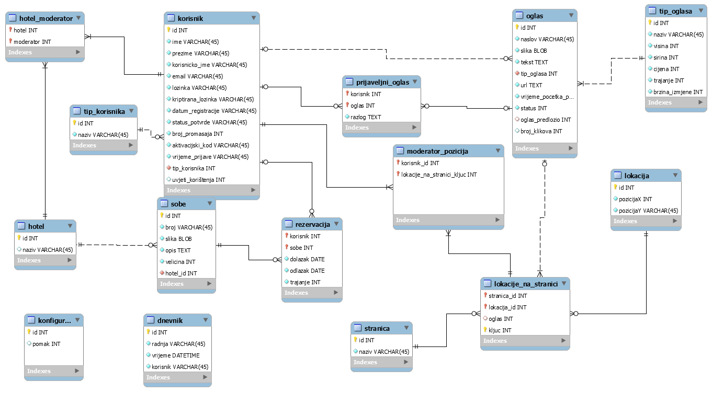
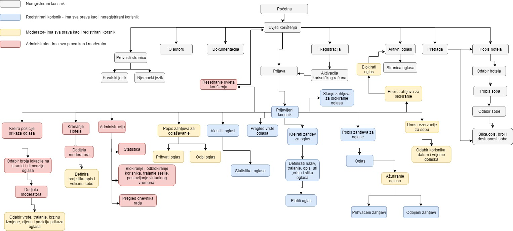

Nakon 10 tjedana nastave iz WebDiP-a došao je trenutak kada sami moramo primjeniti stečeni znanje i napraviti funkcionalnu web stranicu.
Tokom 10 tjedana nastave su pokazane samo osnovne koje ralno i ne pomažu ako ne znate osnovno iz progamiranja. Moja tema je bila napraviti stranicu kao e-booking
ali tonije glavna tema projekta već oglasi. Dobili smo neke osnovne natuknice i skripte koje bi projekt morao imati kao registracija, prijava, dokumentacija, o nama itd. Ova Web stranica bi
trebala omogućiti prikaz oglasa registriranih korisnika te pregled statistike oglasa, Prikaz hotela i njohovih soba te moguća rezervacija gdje korisnik prvo šalje zahtjev koji moderator mora
odobriti.Oglasi se mogu prijaviti iz nekog raztloga(uvredljiv sadržaj, neispravan url itd.) koje moderator može prihvatiti ili zanemariti. Ako moderator blokira oglas taj oglas se više neće
prikazivati. Moderator može unositi vrste oglasa za svoje pozicije koje je zaduže od strane administratora. Administrator može pregledavati dnevnik aktivnosti na stranici (prijava, registracija
unos novi podataka i slicno), pregledstatistike oglasa i korisnika. Na pocetnoj stranici je dozvoljeno pregledavati hotele i slobodne sobe po terminu za ne regidtrirane korisnike. Admin ima sva prava
od moderatora, reg. korisnika, dok moderator samo ima prava od reg. korsnika.
Opis projektong rješenja
Stranica mora preoznati o kojoj se ulogi radi jer Moderator nebi trebao imati prava kao sto ima administrator tj svaka uloga imas voje funckionalnosti a samo nadređena uloga može koristit od podređenih.
Uz uloge postoje još i dodatne aktivnosti koje se mogu napraviti a to su sql xml injection, prevođenje stranice na neki drugi jezik, pdf za printanje statsitickih podatakniz tablica.
Dosta dijelvoa sam uzeo iz svojih zadaća koje sam radio i to su provjere i validacije kod prijave, cijeli html i css koji sam malo modificirao. Mislim da je dizajn vrlo ugodan jer nebesko plava boja je
lijepa boja te sa crnim tesktom ne treba puno naprezati oči. Linkovi su sa pozadinom crnom i text je žuti kad se miše prolazi. Postoji za određene medije dizajn zamobitele i tablete koji nije nešto previše uređen
ali minimalan i čitljiv.
ERA model
ERA model je najvazniji element kod svakog projekta jer ako baza nije dobra ili nije najbolje napravljena biti će vam teško raditi tj imat će te velike i zahtjevne upite koji će vam usporiti rad stranice.
Kratak opis ERA modela: Većina slućajeva je 1:N veza iako je nepotrebno u ovom projektu ja sam ipak tako stavio. Imma nekoliko ternarnih veza npr kao kod hotela i korisnika koja mi treba da znam koji
moderator je zadužen za koji hotel, takodjer lokacija na stranici koja biljezi stanicu i lokaciju te trebala bi biti sa korisnikom spojena. Korisnik moze prijaviti oglas uz navodjenje konkretnog razloga.
Svaki oglas mora imati tip oglasa i i an svakoj destinaciji mora biti barem dvije vrste oglasa.Tablica dnevnik nam sluzi za pregled u log aplikacije, tip_korisnika tablica odredjuje o kojoj se ulozi radi
i tako je zapisana u tablicu korisnik.Oglas ima stupac status koji je 0 te ako moderator odluci da se smije priakzivati onda prelazi u 1 i automatski pocima prikaz.

ERA model sustava za Hotel
Popis skripata i mapa te njihov opis
Mapa privatno
Sadrži 3 skripte .htaccess, .htpasswd i Korisnici.php
.htacces je skripta u kojoj ne dopuštam svakom da vidi datoteke u direktoriju i da ih može otvoriti. Skripta za psotavljanje prava.
.htpasswd je skripta u kojoj se nalazi kriptirana lozinka i korisnicko ime za pristup skripti Korisnici.php
Korisnici.php je skripta koja ispisuje sve korsnike iz baze.
Mapa css
Sadrži css datoteku lukkristi.css
lukkristi.css je css datoteka u kojoj dizajn stranice i responzivni dizajn
Mapa slike
Sadrži 5 slika:
CSS3.png je slika css-a
Era.png je slika Era modela u projektu
HTML5.png je slika html validacije
Navigacijski.jpg je slika navigacijskog dijagrama projekta
luaks.jpg je slika autora projekta
Administrator.php
je skripta u kojoj admin može pregledavati dnevnik, pretrazivati po dnevniku, otključavati zaključane korisnike, kreiranje hotela te istom dodati jednog moderatora
može nakadno dodati više moderatora jednom hotelu.
Baza.class.php
služi za spajanje na bazu , te izvršavanje upita kao što je SELECT,INSERT i UPDATE koja je preuzeta od kolegija WebDiP sa jednom dodatnom funkcijom. Funkcija ne prima
nikakvu vrijednost ali računa trenutno vrijeme ako postoji pomak ako ne onda vraća normalno vrijeme.
Index.php
je skripta koja služi za ne registrirnaog korisnika, koju može prevesti na željeni jezik, pretra#ivati hotele te pregled soba nakon odabira.
Moderator.php
Provjerava dali se radi o moderatoru ili administratoru, može unositi sobe za hotele koje je ovlašten, unosi rezervacije za svoje hotele, te može unijeti novu vrstu oglasa.Ako je
aadministrator onda on može unsoiti sobe za bilo koji hotel. Može prihvaćat nove oglase i blokirati prijavljene oglase.
O_autoru.html
je stranica gdje su osnovni podaci o autoru ovog projekta.
Odjava.php
služi za dojavu korinika sa stranicce i uništavanje sesije zbog koje više neće moći pristupiti većini stranica
OtkljucavanjeZakljucavanje.php
je skripta uz pomoć koje amdinistrator otključava/zaključava korinsčki račun koji je zaključan
PostaviVrijemeAplikacije.php
služi za postavljanje virtualnog vremena kojoj samo admin može pristupiti.
Prijava.php
Služi za prijavu na stranicu, gdje se svaka uloga raspodjeli na svoju stranicu moderator na moderator.php, korisnik na registriraniKorisnik.php a admin na administrator.php
Prijava ima kolačić koju sprema korisničko ime nakon uspješne prijave, koje ostaje zapamćeno prilikom iduće prijave. Ako se lozinka slucajno unese 3 puta pogrešno račun se zaključava,
kojeg može samo admin otključati. Ima provjere korisnickog imena i link ako je lozinka zaboravljena.
ProvjeraKorisnika.php
je skripta koja prima korisnicko ime od registracijskog polaj korisnicko_ime i provjeravaje li postoji takvo korisnicko ime i ispisuje poruku
Registracija.php
ova skripta sluzi za registriranje normalnog korisnika i ima validacije na korisnickoj strani i na starni servera. Provjera da nije ostalo nijendo polje prazno, provjera recaptcha,
email-a, lozinka i ponovljena lozinka moraju iste biti,unos ne dozvoljenih znakova u poljima, funckija koja automatski provjerava jel ima isto korisnicko ime u bazi, salje na mail
aktivacijski kod.
RegistriraniKorisnik.php
je skripta za normalnog korisnika, može vidjeti statistiku svojih oglasa, prijaviti aktivni oglas zbog nekog razloga(url ne radi, neprimjeren sadržaj itd.).
StatistikaKlikova.php
je skripta kojoj samo administrator može pristupit da vidi statisiku klikova svih oglasa koji su aktivni, može pretraživat, straničit, sortirat.
StatistikaPlacenihOglasa.php
je skripta kojoj samo administrator može pristupit na kojoj se nalaze dvije tablice koje prikazuju statistiku plaćenih oglasa po tipu, te plaćenih oglasa po korisniku
obje tablice se mogu filtrirati i sortirati.
UnosPomakaUTablicu.php
je skripta kojoj samo administrator može pristupit, koja služi za unos pomaka u bazu te da se stim vremenom može radit.
ZaboravljenaLozinka.php
skripta koja služi za slanje nove šifre ako je korisnik svoju zaboravio, prikazuje formu za unos email-a koji provjerava da li postoji takav mail i šalje novu šifru koja se random generira
PrihavtitOglas.php
skripta koja odobrava oglas nakon sto moderator odabere hoce li ga pustiti, odbit ili blokirat.
lukkristi.js
je javascript skripta koju koristim kod registracije. Validacija na korsinickoj strani, korisnicko mora imati 5 znakova, prezime i ime moraju velikim slovom počimati , provjera nedopuštenih znakova "!#,
lozinka mora imati 6 znakova, polja ne smiju ostati prazna.
Navigacijski dijagram

Navigacijski dijagram
Popis i opis tehnologija koristenih
NetBeans
To je jedina paltforma koju sam koristio tokom izrade projekta. To je open source aplikacija u kojoj možete izradđivati desktop, mobilne i web aplikacije. Ima ekstenzije za html,
css, C, C++, javascript, javadoc i PHP.
MySQL workbench
Open source aplikacija za izradu ERA modela.
Popis vanjskih biblioteka
google.com recaptcha
Potrebna skripta za korištenje google recaptcha u projektu (Registracija.php).
google translate api
Potrebna skripta za prevođenje početne stranice (Index.php).